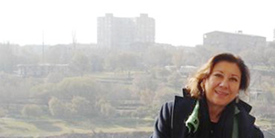

ПРИНЦИПЫ МЕЖДУНАРОДНОЙ
ЖУРНАЛИСТИКИ В АРМЕНИИ
НЕ ДЕЙСТВУЮТ
Интервью Day.Az
с корреспондентом газеты
«The New Anatolian»
Нурсун Эрель.
Нурсун ханум, по приглашению Кавказского Центра Миротворческих Инициатив и при содействии посольства Великобритании Вы совершили десятидневный рабочий визит в Армению. Почему Вы согласились поехать в эту страну? И как на это отреагировали ваши коллеги в Турции?
Я приняла это приглашение, потому что очень хотела поехать. Я журналист, а в нашей профессии обязательно получать информацию из первоисточника. Я не ставлю, конечно, под сомнение всю информацию, получаемую мною из армянских СМИ, но я все же предпочитаю сама видеть, слышать, ощущать. Новость из вторых рук меня не устраивает. Не поехав туда, не пообщавшись с народом, невозможно составить полноценную картину об этом обществе, понять, как относится среднестатистический армянин к туркам и Турции. И поэтому я думаю, моя поездка оказалась весьма полезной.
Будучи в Ереване, я проинтервьюировала Министра Иностранных Дел РА Вардана Осканяна, Спикера Парламента Тиграна Торосяна, одного из лидеров «Дашнакцутюн» Гиро Манояна. Так же я встречалась с другими официальными лицами, историками, исследователями, писателями, журналистами и обычными прохожими на улице. Живую беседу, диалог ничем не заменить.
Что касается реакции моих коллег в Турции, я поняла, к чему вы клоните. У нас не существует тех проблем, которые есть у вас, в Азербайджане. Гражданам Турции, разумеется, в том числе и журналистам, не запрещено ездить в Армению.
Выходит, Вы верите в эффективность народной дипломатии и диалога?
Да, я верю. Дело в том, что армянский народ сегодня подвержен агитпропу властей. А агитпроп Армении далек от реальности, объективности. Народ получает однобокую информацию о своих соседях. В данном случае о Турции. Люди должны знать, что кроме черного и белого, есть еще и серый цвет. И когда они видят или слышат что-то отличное от того, чем кормит их официоз, они сильно удивляются.
Граждане Армении, приезжая в Турцию, поражаются увиденному. Оказывается, что это не та страна, какой она преподносится им в Армении. Мне сами армяне признавались в этом. Поэтому, полагаю, народная дипломатия нужна, полезна, и общественный диалог должен поощряться властями наших стран.
А как вы оцениваете поездку двух азербайджанских журналистов вместе с Вами в Армению? Пошло ли это вам на пользу?
Они однозначно помогли мне и поддержали в ходе этой поездки. Во-первых, ваш общий язык общения с армянами, это русский, что является большим преимуществом.
Например, когда мои переводчики с английского затруднялись в переводе некоторых фраз и даже предложений, мне помогали азербайджанцы. Достаточно вспомнить интервью с писателем Ваграмом Мартиросяном, на котором вы очень сильно помогли мне и благодаря вам, интервью получилось полноценным и наша беседа обрела смысл.
Далее, интервью со спикером парламента господином Тиграном Торосяном. Когда он начал говорить о страданиях армянского народа, вы спросили у него про страдания азербайджанского народа, точнее, про столкновения с армянами в начале двадцатого столетия. Например, мне бы в голову не пришло задать ему такой вопрос.
Как по-вашему, если Турция решит все свои проблемы с Арменией, возможен вариант открытия границ, вопреки нерешенному Карабахскому конфликту?
По-моему, Турция в этом вопросе не станет делать шага назад. Даже если все проблемы с Арменией решатся, но не решится Карабахский вопрос, Турция все равно не станет открывать границы, до тех пор, пока Армения будет настаивать на своих деструктивных позициях и отказываться от соблюдения резолюций ООН. И это не есть позиция властей Турции. Это, государственная политика нашей страны и она не изменяется с приходом нового правительства. Поэтому, кто бы ни стал во главе государства в Турции, в этом вопросе изменений не будет никогда.
И почему все ждут уступок от Азербайджана или Турции? Может, Армения тоже сделает хотя бы шаг навстречу?
Что Вы почувствовали и что предприняли, когда столкнулись с искажением Вашего интервью на PanARMENIAN?
Сильно удивилась. С другой стороны, «это ведь в порядке вещей», подумала я. Могу объяснить почему. Дело в том, ректор Ереванского Государственного Университета запретил мне встречаться и общаться со студентами ЕГУ. Тогда я поняла, насколько предвзяты к нам в Армении.
Но тогда мне казалось, что журналисты Армении более свободны в своих действиях. Например, вернувшись в Турцию, я напечатала интервью с политиками, писателями и другими общественными деятелями Армении, без единого искажения их слов. Мы - англоязычная газета, и эти люди сами могут убедиться в этом, посетив наш сайт.
Но я с ужасом обнаружила, что за исключением немногих СМИ, армянская пресса есть один большой государственный орган, и принципы международной журналистики в Армении не действуют.
Что еще меня поразило. Вместо того, чтобы задавать мне вопросы о Турции, интересоваться политикой, экономикой, социальным положением населения нашей страны, многие журналисты начинали мне, подчеркиваю мне, рассказывать про Турцию, объяснять, доказывать, что в действительности происходит там (!). При чем, говорили все это голосом, не терпящим возражения.
Возвращаясь к вашему вопросу. Искажение моих слов на PanARMENIAN меня сильно разочаровало, это бесспорно. И я благодарна Кавказскому Центру Миротворческих Инициатив в лице Георгия Ваняна, который сделал все что в его руках, для исправления этой, мягко говоря, ошибки. Хотя и в PanARMENIAN не стали публиковать мое письмо с опровержением, я все равно остаюсь большим оптимистом.
Надеюсь, придет время и армянские СМИ, перестанут жертвовать профессионализмом ради националистических предрассудков.
Алекпер Алиев
Баку-Ереван-Баку
19-12-06
Нурсун ханум, по приглашению Кавказского Центра Миротворческих Инициатив и при содействии посольства Великобритании Вы совершили десятидневный рабочий визит в Армению. Почему Вы согласились поехать в эту страну? И как на это отреагировали ваши коллеги в Турции?
Я приняла это приглашение, потому что очень хотела поехать. Я журналист, а в нашей профессии обязательно получать информацию из первоисточника. Я не ставлю, конечно, под сомнение всю информацию, получаемую мною из армянских СМИ, но я все же предпочитаю сама видеть, слышать, ощущать. Новость из вторых рук меня не устраивает. Не поехав туда, не пообщавшись с народом, невозможно составить полноценную картину об этом обществе, понять, как относится среднестатистический армянин к туркам и Турции. И поэтому я думаю, моя поездка оказалась весьма полезной.
Будучи в Ереване, я проинтервьюировала Министра Иностранных Дел РА Вардана Осканяна, Спикера Парламента Тиграна Торосяна, одного из лидеров «Дашнакцутюн» Гиро Манояна. Так же я встречалась с другими официальными лицами, историками, исследователями, писателями, журналистами и обычными прохожими на улице. Живую беседу, диалог ничем не заменить.
Что касается реакции моих коллег в Турции, я поняла, к чему вы клоните. У нас не существует тех проблем, которые есть у вас, в Азербайджане. Гражданам Турции, разумеется, в том числе и журналистам, не запрещено ездить в Армению.
Выходит, Вы верите в эффективность народной дипломатии и диалога?
Да, я верю. Дело в том, что армянский народ сегодня подвержен агитпропу властей. А агитпроп Армении далек от реальности, объективности. Народ получает однобокую информацию о своих соседях. В данном случае о Турции. Люди должны знать, что кроме черного и белого, есть еще и серый цвет. И когда они видят или слышат что-то отличное от того, чем кормит их официоз, они сильно удивляются.
Граждане Армении, приезжая в Турцию, поражаются увиденному. Оказывается, что это не та страна, какой она преподносится им в Армении. Мне сами армяне признавались в этом. Поэтому, полагаю, народная дипломатия нужна, полезна, и общественный диалог должен поощряться властями наших стран.
А как вы оцениваете поездку двух азербайджанских журналистов вместе с Вами в Армению? Пошло ли это вам на пользу?
Они однозначно помогли мне и поддержали в ходе этой поездки. Во-первых, ваш общий язык общения с армянами, это русский, что является большим преимуществом.
Например, когда мои переводчики с английского затруднялись в переводе некоторых фраз и даже предложений, мне помогали азербайджанцы. Достаточно вспомнить интервью с писателем Ваграмом Мартиросяном, на котором вы очень сильно помогли мне и благодаря вам, интервью получилось полноценным и наша беседа обрела смысл.
Далее, интервью со спикером парламента господином Тиграном Торосяном. Когда он начал говорить о страданиях армянского народа, вы спросили у него про страдания азербайджанского народа, точнее, про столкновения с армянами в начале двадцатого столетия. Например, мне бы в голову не пришло задать ему такой вопрос.
Как по-вашему, если Турция решит все свои проблемы с Арменией, возможен вариант открытия границ, вопреки нерешенному Карабахскому конфликту?
По-моему, Турция в этом вопросе не станет делать шага назад. Даже если все проблемы с Арменией решатся, но не решится Карабахский вопрос, Турция все равно не станет открывать границы, до тех пор, пока Армения будет настаивать на своих деструктивных позициях и отказываться от соблюдения резолюций ООН. И это не есть позиция властей Турции. Это, государственная политика нашей страны и она не изменяется с приходом нового правительства. Поэтому, кто бы ни стал во главе государства в Турции, в этом вопросе изменений не будет никогда.
И почему все ждут уступок от Азербайджана или Турции? Может, Армения тоже сделает хотя бы шаг навстречу?
Что Вы почувствовали и что предприняли, когда столкнулись с искажением Вашего интервью на PanARMENIAN?
Сильно удивилась. С другой стороны, «это ведь в порядке вещей», подумала я. Могу объяснить почему. Дело в том, ректор Ереванского Государственного Университета запретил мне встречаться и общаться со студентами ЕГУ. Тогда я поняла, насколько предвзяты к нам в Армении.
Но тогда мне казалось, что журналисты Армении более свободны в своих действиях. Например, вернувшись в Турцию, я напечатала интервью с политиками, писателями и другими общественными деятелями Армении, без единого искажения их слов. Мы - англоязычная газета, и эти люди сами могут убедиться в этом, посетив наш сайт.
Но я с ужасом обнаружила, что за исключением немногих СМИ, армянская пресса есть один большой государственный орган, и принципы международной журналистики в Армении не действуют.
Что еще меня поразило. Вместо того, чтобы задавать мне вопросы о Турции, интересоваться политикой, экономикой, социальным положением населения нашей страны, многие журналисты начинали мне, подчеркиваю мне, рассказывать про Турцию, объяснять, доказывать, что в действительности происходит там (!). При чем, говорили все это голосом, не терпящим возражения.
Возвращаясь к вашему вопросу. Искажение моих слов на PanARMENIAN меня сильно разочаровало, это бесспорно. И я благодарна Кавказскому Центру Миротворческих Инициатив в лице Георгия Ваняна, который сделал все что в его руках, для исправления этой, мягко говоря, ошибки. Хотя и в PanARMENIAN не стали публиковать мое письмо с опровержением, я все равно остаюсь большим оптимистом.
Надеюсь, придет время и армянские СМИ, перестанут жертвовать профессионализмом ради националистических предрассудков.
Алекпер Алиев
Баку-Ереван-Баку
19-12-06